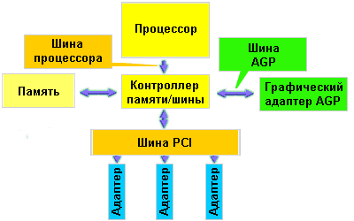

|
|
|
Ускоренный графический порт (AGP — Accelerated Graphic Port)
это расширение шины PCI. Его назначение — обработка больших массивов данных
3D графики.
Кратко
AGP— это прямое соединение между графической подсистемой и системной памятью.
Это решение обеспечивает значительно лучшие показатели передачи данных,
чем при передаче через шину PCI, и удовлетворяет требованиям вывода 3D
графики в режиме реального времени. Через AGP можно подключать только один
тип устройств — графический адаптер.
AGP спецификация
1.0 работает на частоте 133 МГц, поэтому за один 66-МГц цикл она способна
передавать два блока данных (AGP 2x). Пропускная способность шины оценивается
в 500 МБайт/с.
В спецификации
Revision 2.0 появилась возможность осуществлять 4 транзакции (пересылки
блока данных) за один 66-МГц такт (AGP 4x), пропускная способность возросла
до 1 ГБайта/с.
Шина
AGP полностью поддерживает операции шины PCI.
